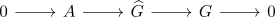
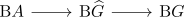
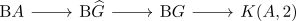

central extension induces element on group cohomology
Proposition
Let $G,A$ be groups, where $A$ is abelian and

be a central extension.
Then this induces an element
\begin{align*}
x \in H^2(\mathrm{B}G,A)
\end{align*}
Proof
use short exact sequence of topological groups induces fiber sequence on classifying spaces to get a fiber sequence

Then since $A$ is abelian and discrete, we get
\begin{align*}
\mathrm{B}A \simeq& K(A,1) \\
\simeq& \Omega K(A,2)
\end{align*}
and we may use simple fibration between connected spaces induces homotopy pullback diagrams <insert some loop argument, topo 3 5.14> to extend

to a fiber sequence.
Here we have used that $\mathrm{B}A \rightarrow \mathrm{B} \widehat{G} \rightarrow \mathrm{B}G$ is a central extension, so $A \subseteq \widehat{G}$ lies in the center.
In particular we get a map
\begin{align*}
\mathrm{B}G \rightarrow K(A,2)
\end{align*}
which represents an element in the cohomology.